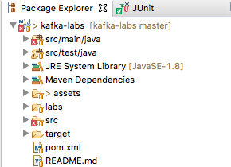

Import the ‘kafka-labs’ project into your favorite IDE.
None
10 mins
Walk through this project on screen first.
Instructor will provide details.
From terminal, execute the following
# make sure we do this in ~/dev dir
$ cd $HOME/dev
# Instructor will provide the URL
$ wget <LAB URL>
$ unzip kafka-labs.zipInstructor will provide details.
This is a maven project. And can be readily opened by Eclipse or IntelliJ.

Inspect file : src/main/java/x/utils/ClickStreamGenerator.java
This file generates random clickstream data that we will use.
=> Right-click on ClickStreamGenerator.java file and run it.
Here is a sample output:
1451635200005,ip_67,user_16,clicked,facebook.com,campaign_5,91,session_251
1451635200010,ip_57,user_89,viewed,foxnews.com,campaign_4,17,session_224
...
{"timestamp":1451635200055,"session":"session_57","domain":"twitter.com","cost":24,"user":"user_31","campaign":"campaign_1","ip":"ip_64","action":"blocked"}
{"timestamp":1451635200060,"session":"session_188","domain":"foxnews.com","cost":26,"user":"user_33","campaign":"campaign_4","ip":"ip_99","action":"clicked"}Great.. now your environment is setup!